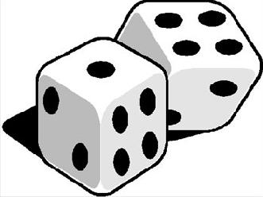

Choose Your Own Adventure
Le Jdr Dont Vous Êtes Le Héros
Traduction d’un jeu de Shane Mclean par Lucas Cimon : chezsoi.org, avec une variante de la règle du lancé de dé.
Pour trois joueurs ou plus (idéalement quatre ou cinq)

Vous ouvrez impatiemment le livre à la page 1 et débutez un voyage fait de “ rendez-vous en page … ” et de choix cornéliens. Devant vous, une aventure où vous déciderez de votre destin ! Peut-être ce livre sera celui que vous finirez sans mourir ? Et sinon, vous pouvez toujours revenir en arrière.
Qu’attendez-vous ? Allez-y et choisissez trichez votre histoire !

Commencer la partie
Tout d’abord, rassemblez quatre dés à six faces.
Ensuite, jetez-les pour déterminer le titre de votre livre. Assurez-vous de le lire à haute voix avec un ton dramatique !
| 2. | La Forêt |
|---|---|
| 3. | Les Cavernes |
| 4. | Le Donjon |
| 5. | La Crypte |
| 6. | La Citadelle |
| 7. | Les Catacombes |
| 8. | Le Port |
| 9. | Le Marais |
| 10. | L’Île |
| 11. | La Montagne |
| 12. | La Vallée |
| 2. | du Destin ! |
|---|---|
| 3. | Maudite ! |
| 4. | du Malheur ! |
| 5. | du Désespoir ! |
| 6. | de Zalkir ! |
| 7. | de la Mort ! |
| 8. | de Minuit ! |
| 9. | de la Victoire ! |
| 10. | de Glace ! |
| 11. | de Feu ! |
| 12. | de la Puanteur Éternelle ! |
Pas inspiré pour débuter l’histoire ? Lisez ceci à voix haute
“ Votre quête du trésor du Donjon de Zalkir débute. Une épée dans une main, une torche enflammée dans l’autre, vous vous avancez dans l’obscurité.
La descente continue dans les tunnels froids et humides, jusqu’à déboucher dans une large pièce entourée de gargouilles au regard inquisiteur. Une solide porte est encastrée dans chaque mur. La porte en face est marquée du sceau du sorcier maléfique Zalkir.
Il y a un petit coffre en bois au milieu de la pièce. ”
Les autres joueurs présentent alors les choix qui s’offrent au héros.
Déroulement de la partie
La personne la plus âgée présente est le le premier joueur, le Lecteur de l’Histoire. Il prend les dés et décrit un paragraphe ou deux du texte d’introduction d’un livre-dont-vous-êtes-le-héros. Soyez concis et dynamiques, sans être trop précis. Laissez aux autres joueurs la liberté d’inventer des choix.
Lorsque le Lecteur a terminé sa description c’est au tour des autres joueurs. Chacun d’eux présente alors une option au Lecteur, sur le modèle de “ Pour faire xxx allez en page xx. ” Choisissez un numéro de page à deux chiffres entre 1 et 6.
Le Lecteur passe alors les dés au joueur avec l’option la plus drôle ou intéressante. Celui-ci lance ensuite 4d6 pour déterminer si ce choix est mortel : si au moins un des chiffres correspond a un de ceux du numéro de page, la décision était sage et le héros survit. Le joueur qui a effectué le jet devient le Lecteur suivant et continue l’histoire comme il le souhaite. Il fera ensuite une pause pour laisser les joueurs proposer à nouveau des choix.
Si aucun des dés obtenus n’est égal à un des chiffres de la page, le choix était… moins sage. Le joueur ayant lancé les dés décrit alors une scène de mort de l’aventurier. Soyez bref mais mémorable. Rendez après les dés au Lecteur qui choisit une autre option et transmet les dés à nouveau. Heureusement (quitte à tricher, autant le faire bien) ce second choix est toujours sans danger. Aucun jet n’est nécessaire, la réussite est automatique !
Notez les numéros de chaque page traversée sur une feuille. À partir de la 5e page, ne lancez que 3d6. À partir de la 9e, n’en lancez que 2. La difficulté augmente, faites en sorte votre histoire le reflète.
Fin du récit
La partie s’arrête après le 12e choix de page. Le dernier Lecteur raconte alors un court épilogue.
De temps en temps faites référence à des objets ou de tomes précédents, par exemple “ si vous choisissez la corde rendez-vous en page … ”, “ si vous avez aidé les nains du Château des Grosses Barbes rendez-vous en page … ”
Ajoutez un mystérieux vieil homme, des monstres et des pièges évidents !
“ Pour fuir le danger rendez-vous en page … ”
“ Pour affronter le vieil homme dans un duel d’énigmes afin d’obtenir la clef de la porte verrouillée allez en page … ”